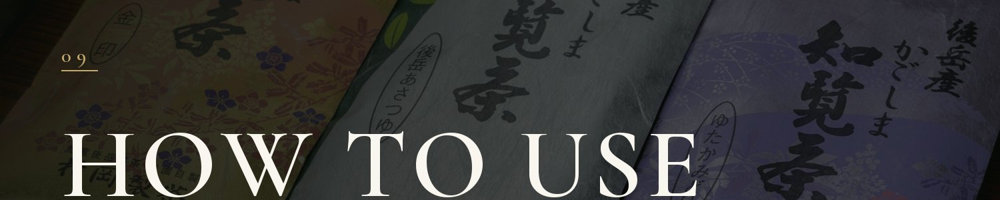

The Phantom Green Tea
MABOROSHI
Ushirodake — the birthplace of Chiran tea. A sixth-generation family grows Asatsuyu, the rare "phantom" green tea, in misty mountain air.
In the misty mountains of Chiran, Kagoshima, the first tea tree is said to have been planted some 800 years ago. This place — Ushirodake — is the birthplace of Chiran tea.
Deep mist and a cool climate give the leaves a profound umami and a refined sweetness. One sip, and the scene of a mist-wrapped tea field quietly returns to you. We deliver that cup straight from where it grows.
Muraoka Tea is a small family farm in Ushirodake, the northernmost tip of Chiran, Kagoshima. On this land — said to be the birthplace of Chiran tea — we grow the rare cultivar Ushirodake Asatsuyu.
Now we bring the cup known locally as "maboroshi" (the phantom) directly to the world.
Asatsuyu is a rare cultivar prized for its deep green color, rich umami, and refined sweetness — sweet yet clean on the palate, with little bitterness. People often call it "gentle" and "round."
Only 0.06% of all tea grown in Japan is Asatsuyu. Because it cannot be mass-produced in these demanding mountains, it came to be called the phantom tea.
Here in Ushirodake, an ancestor of the Muraoka family is said to have planted the very first tea tree, around 800 years ago — the beginning of Chiran tea.
Passed from hand to hand through the generations, the craft has continued; since the family began farming tea as a livelihood, Kazuya Muraoka is the sixth generation.
The Muraoka family had always been growers. Only in this generation did we begin delivering the tea ourselves. That is exactly why we want as many people as possible to know this taste — and it is the starting point of this project.
There is a reason this tea can only be born in Ushirodake. Before harvest, tea is often shaded ("kabuse") to block sunlight, deepening its umami and sweetness. In Ushirodake, the thick mountain mist plays the role of that natural shade — the land itself, not human hands alone, gently raises the leaves.
We do nothing extraordinary, and ours is no large plantation. As a family, with the help of many hands, we protect a process six generations deep, one step at a time. Only at the end of that patient repetition is the gentle taste of Asatsuyu born.
We have always been growers, and only began delivering our own tea in this generation — so this taste is still little known. We want people across Japan, and around the world, to taste what is born only in Ushirodake.
To us, Kickstarter is not simply a shop: it is a place to share a story, and to be joined by those who feel it. Your support becomes the strength to carry 800 years of tea-making to the next generation.
In the rush of everyday life, a moment to breathe.
With someone dear, a moment to taste the richness of Japan.
And the history this land has protected, now in the palm of your hand.
Ushirodake Asatsuyu (Leaf) / Chiran Sencha Tea Bags / Three-Tea Tasting Set (Kinjirushi · Asatsuyu · Yutakamidori) / Gift Box Set (5 packs)
Asatsuyu Leaf — 100g per pack.
Our symbol — the "phantom" tea.
No teapot needed; great for cold brew.
Kinjirushi · Asatsuyu · Yutakamidori — taste them side by side.
Delivered in a 5-pack gift box — a gateway to Japanese tea culture.

Pour hot water into a cup first, transfer it to a kyusu (teapot) holding the leaves, and wait about 30 seconds before pouring. A moment to calm the mind in a busy day; a moment to share with someone you cherish.
Muraoka Tea (Muraoka Ltd.). A sixth-generation family tea farm in Ushirodake, Chiran, Minamikyushu, Kagoshima. On the land where Chiran tea began, we grow the rare cultivar Ushirodake Asatsuyu.
"More than any award, the happiest thing is hearing a customer say it is delicious." With that belief, we deliver straight from where it grows.